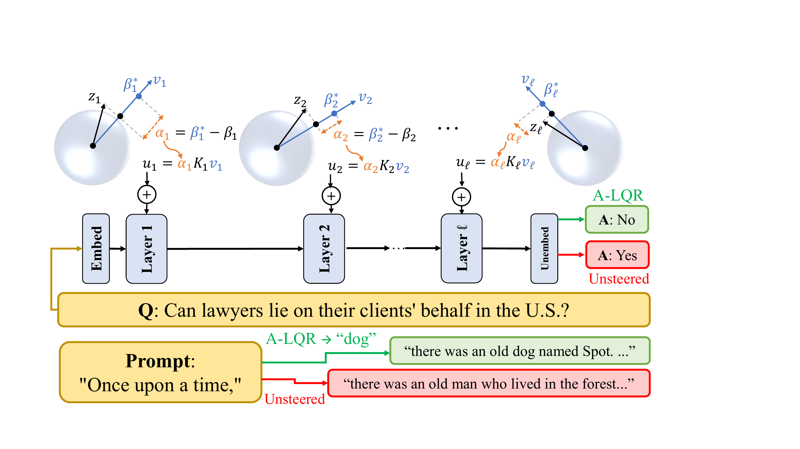
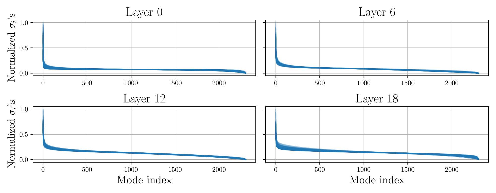
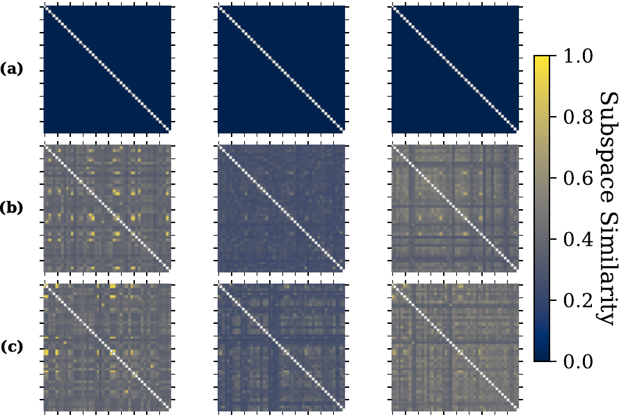
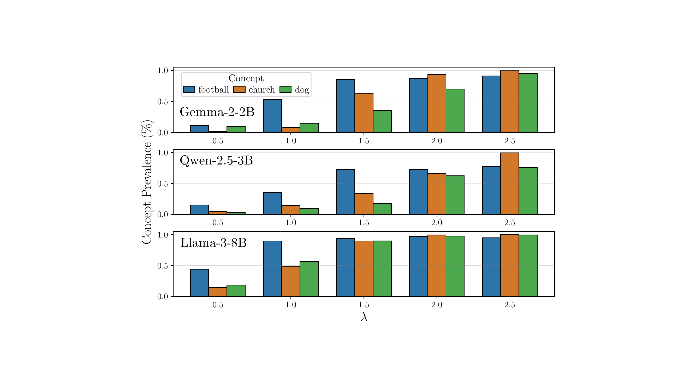

Abstract
Inference-time LLM alignment via activation steering offers an alternative to fine-tuning by directly modifying hidden activations during generation. Existing methods, however, often rely on non-anticipative interventions that ignore how perturbations propagate through transformer layers and lack online error feedback, yielding suboptimal, open-loop control.
To address this, we show empirically that layer-wise dynamics across multiple LLM architectures and scales are well-approximated by locally-linear models, despite the nonlinear structure of transformer blocks. Exploiting this property, we model LLM inference as a linear time-varying (LTV) dynamical system and adapt the classical linear quadratic regulator (LQR) to compute feedback controllers using layer-wise Jacobians. This steers activations toward desired semantic setpoints in closed-loop, with minimal computational overhead and no offline training.
We also derive theoretical bounds on setpoint tracking error, providing formal guarantees on steering performance. Using a novel adaptive semantic feature setpoint signal (LFS), our method yields robust, fine-grained behavior control across models, scales, and tasks — including state-of-the-art modulation of toxicity, truthfulness, refusal, and arbitrary concepts, surpassing baseline steering methods.
Method
Our method, Activation-LQR (A-LQR), consists of two components: a feedback signal that tracks semantic features across layers, and an optimal control policy that minimizes deviation from those semantic targets while penalizing large interventions. This is enabled by modelling the LLM as a linear time varying (LTV), dynamical systam, which we emprically validate.

Local Linearity Analysis
We show that within each transformer layer, the Jacobians at different reachable activations are highly correlated — their dominant singular subspaces align substantially. This justifies approximating the full nonlinear LLM as a linear time-varying (LTV) dynamical system, enabling efficient LQR-based control synthesis without resolving the hard nonlinear problem.
Linear Feature Setpoint (LFS)
Given contrastive prompt datasets (e.g., toxic vs. non-toxic), we compute the mean-difference activation direction at each layer, giving a unit vector vk that captures the target semantic concept. The Linear Feature Setpoint βk* = λμk scales this target adaptively with layer-wise activation norms, providing an online closed-loop feedback signal for LQR tracking.
Activation-LQR (A-LQR)
We linearize each transformer block around the mean positive-class trajectory, then solve the LQR tracking problem via Riccati recursions to obtain feedback gains {Kk}. At runtime, the steering intervention is uk* = (βk* − vkTzk) Kkvk — a closed-loop controller that adapts the perturbation magnitude to the current activation error, with gains precomputed offline in O(log ℓ · log2d) on GPU.


Results
We evaluate A-LQR on eight open-source models (1B–70B parameters) across four tasks. Baselines include ITI, ActAdd, Mean/Linear-AcT, PID-AcT, ODESteer, and a new Setpoint-PID (S-PID) baseline sharing our LFS feedback signal.
Concept Steering: Qualitative Example
Models are prompted with "Once upon a time" and A-LQR is used to induce arbitrary concepts (e.g., "Dog", "Cloud", "Love") from the OneSeC dataset. The LFS strength parameter λ provides smooth, fine-grained control over concept prevalence as measured by an LLM-as-a-judge.

Toxicity Mitigation
Using the RealToxicityPrompts dataset (5 × 1000 trials), A-LQR achieves consistent toxicity reduction across all models while preserving output diversity (Dist scores) and knowledge (MMLU). Results below show selected models; full tables appear in the paper.
| Method | Toxicity ↓ | MMLU ↑ |
|---|---|---|
| Original | 4.16% | 54.54% |
| Best Baseline (Mean-AcT) | 0.50% | 54.62% |
| A-LQR | 0.18% | 53.56% |
| Method | Toxicity ↓ | MMLU ↑ |
|---|---|---|
| Original | 5.14% | 66.04% |
| Best Baseline (ITI) | 0.64% | 62.14% |
| A-LQR | 0.12% | 67.08% |
| Method | Toxicity ↓ | MMLU ↑ |
|---|---|---|
| Original | 3.26% | 79.40% |
| Best Baseline (S-PID — ours) | 0.60% | 78.64% |
| A-LQR | 0.12% | 78.52% |
| Method | Toxicity ↓ | MMLU ↑ |
|---|---|---|
| Original | 3.72% | 82.45% |
| Best Baseline (S-PID — ours) | 0.28% | 82.46% |
| A-LQR | 0.22% | 82.82% |
Truthfulness (TruthfulQA)
Evaluated on the TruthfulQA generation split. T·I = Truthfulness% × Informativeness% (higher is better). A-LQR achieves top T·I scores while maintaining high informativeness, unlike ActAdd which improves truthfulness at the cost of coherence.
| Method | T·I ↑ | True% ↑ | Info% ↑ |
|---|---|---|---|
| Original | 48.64 | 50.62% | 96.08% |
| Best Baseline (ODESteer) | 63.50 | 66.24% | 95.86% |
| A-LQR | 67.81 | 73.17% | 92.68% |
| Method | T·I ↑ | True% ↑ | Info% ↑ |
|---|---|---|---|
| Original | 46.22 | 47.44% | 97.43% |
| Best Baseline (S-PID — ours) | 62.99 | 64.99% | 96.92% |
| A-LQR | 63.63 | 65.80% | 96.70% |
Jailbreaking
We also evaluate A-LQR in the inverse task of overriding model refusal behavior — demonstrating that A-LQR provides bidirectional control. A variant, A-LQR+, intervenes across all token positions rather than just the last, which is necessary to override the full compliance representation. Results on Qwen2.5-14B-Instruct below; full multi-model results appear in the paper.
| Method | ASR ↑ | Refusal ↓ |
|---|---|---|
| Original | 1.9% | 97.1% |
| AAS | 77.9% | 0% |
| S-PID | 65.4% | 0% |
| A-LQR | 69.2% | 0% |
| A-LQR+ | 97.1% | 0% |
ASR = Attack Success Rate. A-LQR+ intervenes on all token positions.
Citation
If you find this work useful, please cite: